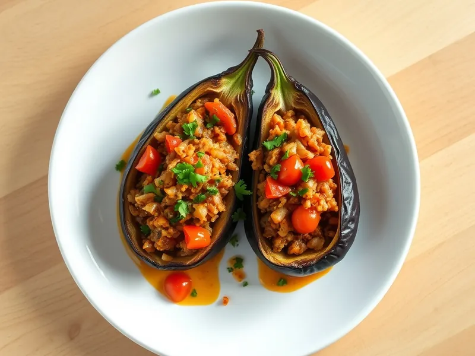

Имам баялды (баклажаны с луком и помидорами)
Турецкие баклажаны с начинкой из лука, помидоров и чеснока, тушённые в оливковом масле
30 мин2 порц.395 ккал на порциюБ 8 · Ж 26 · У 35Средиземноморская кухня
Открыть в приложении: порции, таймеры, список покупок
Продукты на 2 порц.
- Баклажан2 шт
- Лук репчатый2 шт
- Помидоры3 шт
- Чеснок3 зуб.
- Оливковое масло3 ст. л.
- Сахар1 ч. л.
- Вода100 мл
- Соль1 ч. л.
- Петрушка20 г
Как готовить
- Разрежьте баклажаны вдоль пополам, на мякоти сделайте глубокие надрезы сеточкой, не прорезая кожицу, и посолите.
- Обжарьте баклажаны в половине масла срезом вниз на среднем огне 5 минут, затем кожицей вниз 3 минуты, пока мякоть не станет мягкой.
- Тем временем нарежьте лук полукольцами, помидоры кубиком, чеснок пластинками. Обжарьте лук в оставшемся масле на среднем огне 5 минут до мягкости, добавьте чеснок, помидоры, сахар и соль и тушите 4 минуты.
- Вдавите мякоть баклажанов ложкой, чтобы получились лодочки, и разложите в них овощную начинку.
- Влейте в сковороду 100 мл воды, накройте крышкой и тушите на слабом огне 10-12 минут, пока баклажаны не станут совсем мягкими.
- Посыпьте петрушкой. Блюдо вкусно и горячим, и тёплым.
Совет. На следующий день имам баялды ещё вкуснее: храните в холодильнике до 3 дней и подавайте комнатной температуры.